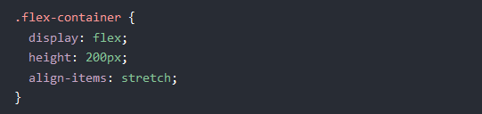
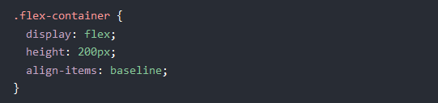

Team Grace Presents:
Flex-box & align properties
Created by Celina M' and K' Elvis,S' Jetsapel, E' Zhuwao,
Flex-box & align properties
Align-Items
In these examples we will use a 200 pixels high container, to better demonstrate the align-items property.
Align-Items = center
The center value aligns the flex items in the middle of the container.
Align-Items = flex-start
The flex-start value aligns the flex items at the top of the container:

When using align-items or align-self, the flex-start value will align flex items at the starting edge of the cross-axis of the flex container. Learn More
Align-Items = flex-end
The flex-end value aligns the flex items at the bottom of the container

Align-Items = stretch
The stretch value stretches the flex items to fill the container (this is default):
Align-Items = baseline
TThe baseline value aligns the flex items such as their baselines aligns
Note: the example uses different font-size to demonstrate that the items gets aligned by the text baseline:
Align Content
The align-content property is used to align the flex lines

In these examples we use a 600 pixels high container, with the flex-wrap property set to wrap, to better demonstrate the align-content property.
Align-content = space-between
The space-between value displays the flex lines with equal space between them:
Align-content = space-around
The space-around value displays the flex lines with space before, between, and after them:
Align-content = stretch
The stretch value stretches the flex lines to take up the remaining space (this is default):
Align-content = center
The center value displays display the flex lines in the middle of the container:
Align-content = flex-start
The flex-start value displays the flex lines at the start of the container.
Align-content = flex-end
The flex-end value displays the flex lines at the end of the container.